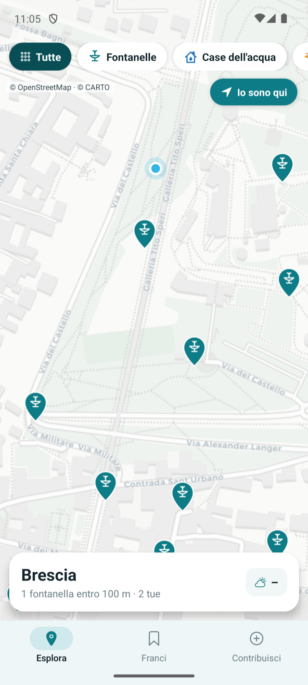
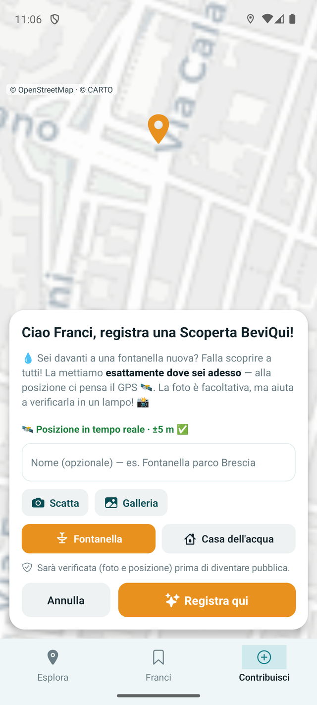
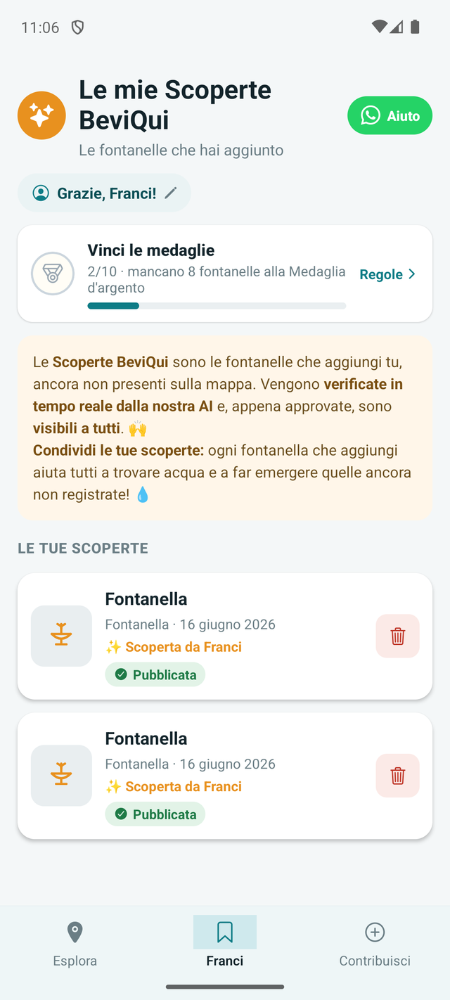

Le fontanelle di acqua potabile vicino a te, sulla mappa
L'acqua buona è qui. Sempre.

BeviQui ti mostra sulla mappa le fontanelle e le case dell'acqua più vicine a te. Riempi la borraccia gratis, ovunque sei. Meno plastica, più leggerezza.
Gratis e senza registrazione · oltre 12.000 fontanelle già sulla mappa in tutta Italia.
Tre tocchi, e l'acqua è tua
Semplice come bere un bicchiere d'acqua.
Esplora
La mappa delle fontanelle pubbliche vicino a te. Tocca un pin e parti, con le indicazioni passo-passo.

Contribuisci
Conosci una fontanella che non c'è? Aggiungila con una foto: la nostra AI la verifica in un lampo.

Le mie Scoperte
Le fontanelle che hai aggiunto tu, con medaglie e ringraziamenti. Ogni goccia che condividi resta tua.
Quante bottigliette hai comprato solo perché avevi sete?
Sei in giro, hai sete, e finisci per pagare l'ennesima bottiglietta di plastica. Eppure l'acqua buona è proprio lì, gratis, a due passi da te. Solo che non sai dove. BeviQui te lo dice.
Come funziona
Bastano 3 passi. Niente account, niente complicazioni.
Apri la mappa
Vedi all'istante tutte le fontanelle e le case dell'acqua intorno a te.
Scegli la più vicina
Attiva il GPS e raggiungila con le indicazioni stradali.
Riempi e bevi
Acqua pubblica, buona e gratuita. Riparti più leggero.
Più di un'app. Un modo nuovo di stare in giro.
Meno plastica
Ogni borraccia riempita è una bottiglietta in meno nell'ambiente.
Più leggeri
Esci senza portarti dietro l'acqua: la trovi quando ti serve.
Sempre tranquillo
Cammini, corri, giri con i bambini o sei turista: l'acqua buona la trovi sempre.
Un bene di tutti
L'acqua pubblica è di tutti noi. BeviQui ce lo ricorda, una fontanella alla volta.
Scaricala adesso. È gratis.
BeviQui è già su iPhone: scaricala gratis dall'App Store. Su Android arriva presto: scrivimi e sei tra i primi. Inquadra il QR con la fotocamera del telefono e inizia subito a trovare l'acqua intorno a te.
Nessuna registrazione obbligatoria. Apri e usi tutto.
La mappa cresce con te
Conosci una fontanella che non c'è ancora? Aggiungila con una "Scoperta BeviQui" e falla esistere per tutti. Segnala se funziona, se è chiusa o se ha bisogno di una mano. Insieme teniamo viva la mappa dell'acqua pubblica d'Italia.
BeviQui è gratis. E vogliamo che resti così.
Niente pubblicità invadenti, non vendiamo i tuoi dati, nessun abbonamento. È un progetto indipendente, nato in Italia per amore dell'acqua pubblica. Se credi che l'acqua buona debba essere di tutti, dacci una mano a portarla in ogni città.
Sostenerci non costa per forza un euro:
Vuoi essere tra i primi?
Lasciaci la tua email: ti avvisiamo appena BeviQui è disponibile nella tua zona, con le nuove fontanelle vicino a te. Niente spam, solo acqua buona.
Rispettiamo la tua privacy. Ti scriviamo solo quando conta.
Domande veloci
È davvero gratis?
Sì, al 100%. Nessun costo nascosto.
Devo registrarmi?
No. Apri e usi tutto subito. Ti chiediamo il nome solo dopo il tuo primo contributo, per ringraziarti.
L'acqua delle fontanelle è sicura?
Sono punti di acqua potabile pubblica gestiti dagli enti locali. Dove serve, la community segnala lo stato.
Funziona nella mia città?
Sì: BeviQui mostra le fontanelle pubbliche di tutta Italia, dal vivo — sono già oltre 12.000 sulla mappa e crescono ogni giorno con la community. A Brescia e provincia funziona anche offline.
Da dove arrivano i dati?
Dalle mappe pubbliche di OpenStreetMap e dai contributi della community.
BeviQui è l'app o l'abbeveratoio per cani?
BeviQui è l'app gratuita che mostra sulla mappa le fontanelle di acqua potabile pubbliche in Italia. Non è il prodotto per animali dal nome simile: è un'applicazione per iPhone e Android.
L'acqua buona è qui. Inizia adesso.
Trova la fontanella. Riempi la borraccia. Bevi. Riparti più leggero.
Scaricala gratis